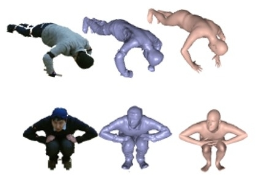

Publication
DeepHuman: 3D Human Reconstruction from a Single Image
Zerong Zheng, Tao Yu, Yixuan Wei, Qionghai Dai, Yebin Liu
Arxiv 2019
We propose DeepHuman, a deep learning based framework for 3D human reconstruction from a single RGB image. Since this problem is highly intractable, we adopt a stage-wise, coarse-to-fine method consisting of three steps, namely inner body estimation, outer surface reconstruction and frontal surface detail refinement.
UnstructuredFusion: Real-time 4D Geometry and Texture Reconstruction using Commercial RGBD Cameras
Lan Xu, Zhuo Su, Lei Han, Tao Yu, Yebin Liu, Lu Fang
IEEE Transactions on Pattern Analysis and Machine Intelligence (TPAMI 2019)
In this paper, we propose UnstructuredFusion, a practicable realtime markerless human performance capture method using unstructured commercial RGBD cameras. Along with the flexible hardware setup using simply three unstructured RGBD cameras without any careful pre-calibration, the challenge 4D reconstruction through multiple asynchronous videos is solved by proposing three novel technique contributions, i.e., online multi-camera calibration, skeleton warping based non-rigid tracking, and temporal blending based atlas texturing.

SimulCap: Single-View Human Performance Capture with Cloth Simulation
Tao Yu, Zerong Zheng, Yuan Zhong, Jianhui Zhao, Qionghai Dai, Gerard Pons-Moll, Yebin Liu
IEEE Conference on Computer Vision and Pattern Recognition (CVPR 2019)
This paper proposes a new method for live free-viewpoint human performance capture with dynamic details (e.g., cloth wrinkles) using a single RGBD camera. Our main contributions are: (i) a multi-layer representation of garments and body, and (ii) a physics-based performance capture procedure.

HybridFusion: Real-time Performance Capture Using a Single Depth Sensor and Sparse IMUs
Zerong Zheng, Tao Yu, Hao Li, Kaiwen Guo, Qionghai Dai, Lu Fang, Yebin Liu
European Conference on Computer Vision (ECCV 2018)
We propose a light-weight and highly robust real-time human performance capture method based on hybrid depth&IMU sensors. The method can reconstruct challenging motions, detailed geometries and the inner human body shapes of a clothed subject simultaneously in real-time.
DoubleFusion: Real-time Capture of Human Performances with Inner Body Shapes from a Single Depth Sensor
Tao Yu, Zerong Zheng, Kaiwen Guo, Jianhui Zhao, Qionghai Dai, Hao Li, Gerard Pons-Moll, Yebin Liu
IEEE Conference on Computer Vision and Pattern Recognition (CVPR 2018 Oral Presentation)
We propose DoubleFusion, a new real-time system that combines volumetric dynamic reconstruction with datadriven template fitting to simultaneously reconstruct detailed geometry, non-rigid motion and the inner human body shape from a single depth camera.
[Webpage] [Arxiv] [Paper] [Youtube] [Video] [TechCrunch] [Sohu]

BodyFusion: Real-time Capture of Human Motion and Surface Geometry Using a Single Depth Camera
Tao Yu, Kaiwen Guo, Feng Xu, Yuan Dong, Zhaoqi Su, Jianhui Zhao, Jianguo Li, Qionghai Dai, Yebin Liu
IEEE International Conference on Computer Vision (ICCV 2017)
We propose BodyFusion, a novel real-time geometry fusion method that can track and reconstruct non-rigid surface motion of a human performance using a single consumer-grade depth camera.

Real-time Geometry, Albedo and Motion Reconstruction Using a Single RGBD Camera
Kaiwen Guo, Feng Xu, Tao Yu, Xiaoyang Liu, Qionghai Dai, Yebin Liu
ACM Transactions on Graphics (Present in SIGGRAPH 2017)
This paper proposes a real-time method that uses a single-view RGBD input to simultaneously reconstruct a casual scene with a detailed geometry model, surface albedo, per-frame non-rigid motion and per-frame low-frequency lighting, without requiring any template or motion priors.